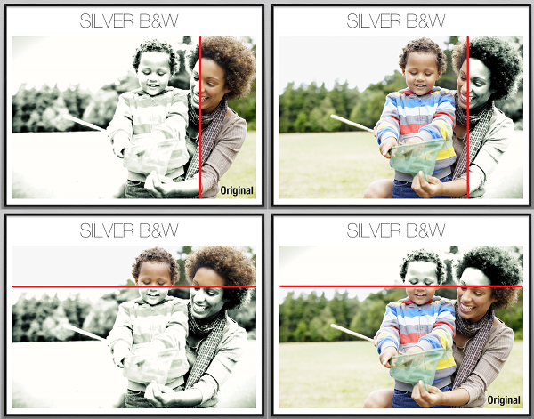

Wipe
Wipe image layers have a top image and a bottom image. As the user drags their finger across the image, the top image is hidden up to the point of their finger, revealing the bottom image below.
Use the Filenames button to specify the top image first, then the bottom image (see "Importing Filenames").
In the example wipe layer shown ( "Wipe direction: right, left, top, bottom"), the top image is the one with the processing effect, while the bottom image is the plain photo with the word "Original on".
You can enter the direction which the image wipes in with the Direction control. The example shows each of the direction options. Clockwise from top left, these are: right, left, top, bottom.
Wipe direction: right, left, top, bottom

You can set an initial start position for the image wipe by appending a percentage after the direction, for example left 25%.
You can choose to show the image wipe as-is, or with a divider image marking out where the top image extends to. To specify an image to use as a divider, enter the image name (including the file extension) in the Divider image field.
Note that the divider image is displayed at exactly the size of the source image, rather than stretching to fit the image wipe. This is so that the divider can overhang the edges of the image, if required. This means that you must tailor its size and orientation for the display size of the image wipe you want to use it on.
Wipe with divider
The final setting for image wipes is the Divider fades toggle. This is only used when a divider image has been specified. When the toggle is set to "ON", the divider will be visible only while the user actively wipes the image. When they let go, the divider fades out.
| ◀ Zoom | Up: Images | Carousel ► |